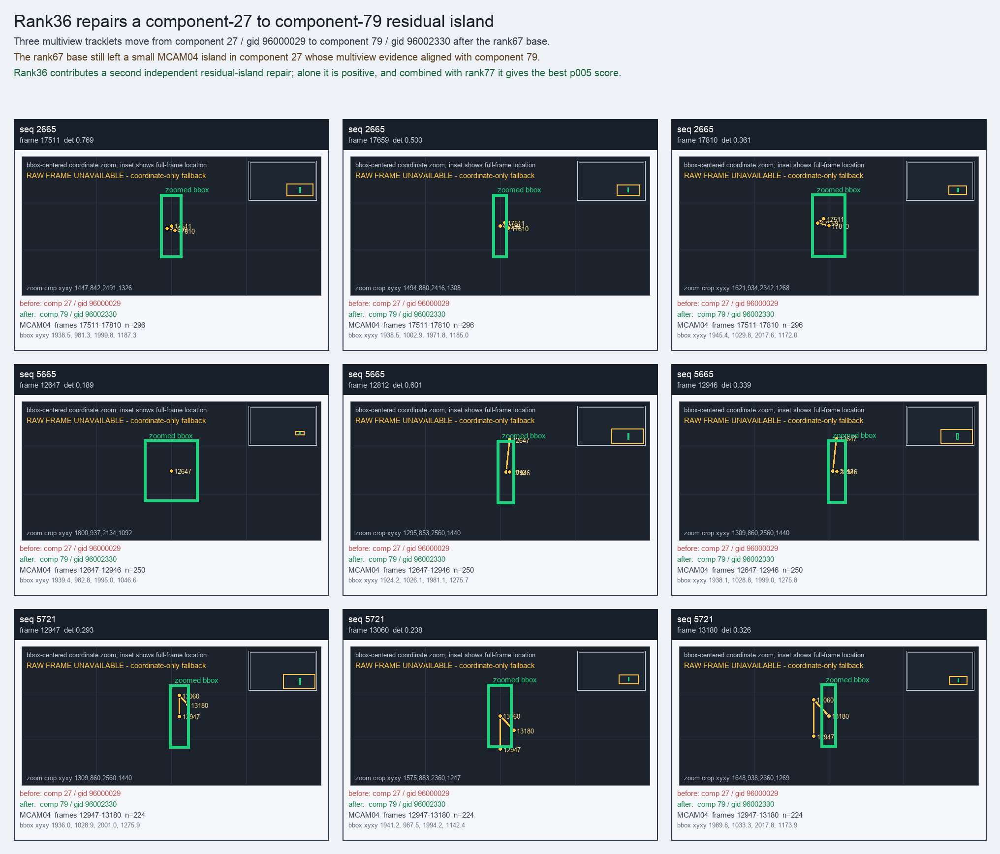

Rank36 repairs a component-27 to component-79 residual island
Three multiview tracklets move from component 27 / gid 96000029 to component 79 / gid 96002330 after the rank67 base.
Before
component 27, gid 96000029, component_size 179
component 27, gid 96000029, component_size 179
After
component 79, gid 96002330, component_size 26, decision_status subpart_reassign
component 79, gid 96002330, component_size 26, decision_status subpart_reassign
Evidence
target_sim=0.5811, target_margin=-0.0934, source_rest_margin=0.3134
Raw frame
unavailable_coordinate_fallback
target_sim=0.5811, target_margin=-0.0934, source_rest_margin=0.3134
Raw frame
unavailable_coordinate_fallback
Failure and fix
Old failure: The rank67 base still left a small MCAM04 island in component 27 whose multiview evidence aligned with component 79.
New implementation: Rank36 contributes a second independent residual-island repair; alone it is positive, and combined with rank77 it gives the best p005 score.
BBox evidence

Moved tracklets
| seq | video | gid | component | frames | dets |
|---|---|---|---|---|---|
| 2665 | vlincs_MS01_MC0001_MCAM04_2024-03-Tc6 | 96000029 -> 96002330 | 27 -> 79 | 17511-17810 | 296 |
| 5665 | vlincs_MS01_MC0001_MCAM04_2024-03-Tc6 | 96000029 -> 96002330 | 27 -> 79 | 12647-12946 | 250 |
| 5721 | vlincs_MS01_MC0001_MCAM04_2024-03-Tc6 | 96000029 -> 96002330 | 27 -> 79 | 12947-13180 | 224 |